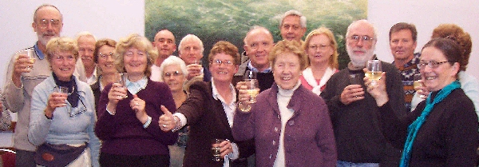

|
is working with Government agencies towards the establishment of Car-rang-gel Sanctuary on North Head at the gateway of Sydney Harbour - a flagship for Australia's environmental resolve and a celebration of our natural and cultural heritage. |
Car-rang-gel Sanctuary on North Head, Sydney

|
|
|
|
|
|
|
|
|
Research | Volunteering |
|
North
Head values
Aboriginal heritage, Built Heritage, Natural Heritage
North Head is a special place, a part of our national heritage, with ...
* outstanding natural values associated with the relatively intact Sydney sandstone bushland, the endangered species and ecological communities that live there, as well as its geological features
* enormous cultural and spiritual significance, as a place of meeting and of healing for Aboriginal people
* the immigration and medical history associated with the Quarantine Station, which is Australia's oldest and most intact, having operated from the 1830s until 1984
* the defence history associated with the former School of Artillery site and its role in Australia's defence since the 1930s, and
* its aesthetic values as the gateway to Sydney Harbour.
Much of its significance comes from the relative isolation derived from its uses, both before and since European settlement - a place of peace and tranquility, a place of refuge. As the Sydney Harbour Federation Trust has identified in its Draft Plan and subsequent work, North Head's relative peace and solitude, to be found on the doorstep of our largest city, are another important aspect of its 'sanctuary' value. North Head should, as the Trust proposes become "a retreat, place of contemplation and reflection".
In an August 1997 address on the State Government's vision for Sydney Harbour Foreshores, NSW Premier Bob Carr identified Sydney Harbour as "one of the most notable and renowned natural urban features in the World". In that same address, Premier Carr set down some important principles for the hand-back of Commonwealth land to the State - principles which he said were to "ensure that decisions are made in the best interests of the people of New South Wales."
In recent years local voices in support of integrated conservation management across North Head have strengthened, until in July 2002, the Sydney Harbour Federation Trust (SHFT), in conjunction with the National Parks & Wildlife Service (NPWS) hosted the North Head Sanctuary forum. While the SHFT is currently responsible for planning for the School of Artillery site, the State Government controls most of the land on North Head.
By
Dr Judy Lambert, North Head Sanctuary Foundation Chair,
February 2003
On May 12th, 2006, The Hon Tony Abbott formally announced that the whole of North Head has been added to the National Heritage List which provides another layer of protection for the area, including requiring that any new development at any of the sites on North Head cannot proceed without approval from the Federal Minister for the Environment. This may influence what is permissible at the Quarantine Station, North Fort and the Police College.

North Head Sanctuary Foundation celebrates the Heritage Listing of North Head in May, 2006
North
Head Sanctuary Foundation Media Release dated 3 January 2007
"The North Head Sanctuary Foundation has today welcomed the announcement
that the former School of Artillery site at North Head is to be handed
over the Sydney Harbour Federation Trust for the development of a sanctuary.
Foundation President, Dr Judy Lambert said "This is an important
step on the way to achieving the visionary outcome Foundation members
have sought for a long time".
"Of course there is still negotiating to be done about what a 'sanctuary'
will involve and what activities are compatible with conserving the outstanding
values, not just of the School of Artillery site, but of the whole of
North Head".
"It's important to the 'sanctuary' values of North Head that piecemeal
developed is not allowed to a point where the peace and solitude that
are part of the special quality of the area, are lost".
Using the precedent of 'sanctuary zones' in Marine Parks and the National
Parks Management Plan for Muogamarra Nature Reserve (which also began
its conservation role as a 'sanctuary') the Foundation sees as primary
objectives, integrated management across the headland that provides for:
(a) the care, propagation, preservation and conservation of wildlife (i.e.
both flora and fauna);
(b) the care, preservation and conservation of natural environments and
natural phenomena;
(c) the study of wildlife, natural environments and natural phenomena;
and
(d) the promotion of the appreciation and enjoyment of wildlife, natural
environments and natural phenomena.
"These outcomes
must be achieved consistent with the objective of identifying, protecting,
conserving, presenting and transmitting the National and Commonwealth
Heritage values of North Head, not just for the present but for all future
generations" Dr Lambert said.
"There's much to be conserved in a North Head Sanctuary. Preservation
of the historic and cultural values of North Head, both Aboriginal and
non-Aboriginal; protection of urban bushland with its endangered species,
ecological communities and populations of Long-nosed Bandicoots and Little
Penguins; the encouragement and regulation of the appropriate use, understanding
and enjoyment of the area; and the encouragement of scientific enquiry
are all important aspects of the 'sanctuary'. This can best be achieved
through integrated management by all of the Commonwealth and State agencies
that have responsibilities on North Head, and with the involvement of
technical and local community knowledge and skills, including that of
Indigenous people. Regular monitoring, review and public reporting on
the conservation of National Heritage values will also be important in
achieving this visionary outcome for the gateway to Sydney Harbour"
Dr Lambert said.
The Foundation believes that the 'sanctuary', peace and solitude provided
to human users of North Head is increasingly important in an ever-expanding
city in which natural areas are of growing importance to health and well-being.
These qualities of North Head can be conserved only if future use and
management fully respects the heritage conservation objectives for the
area.
Dr Judy Lambert AM
|
|
|
|
|
|
|
|
|
Research | Volunteering |
|
|
Email: |
This page was coded for the North Head Sanctuary Foundation
by Judith Bennett.
Copyright
and Disclaimer